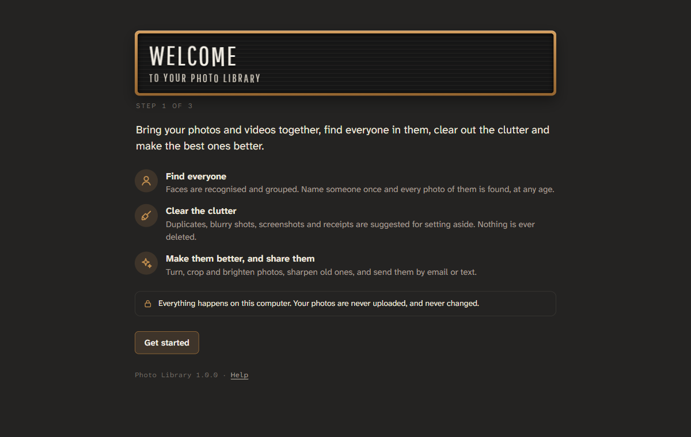

Your photos and videos, gathered in one place on your own computer. Photo Library finds the people in them, clears out the clutter, and helps you share the best ones.
Free. No account, no subscription, and your photos are never uploaded.
What it does
-
Find everyoneFaces are recognised and grouped. Name someone once, and every photo of them is found, from baby pictures on.
-
Clear the clutterCopies, blurry shots, screenshots and receipts are found for you to set aside. Nothing is ever deleted.
-
Look backYour days out and trips gathered into events, and photos found by what’s in them: dogs, beaches, birthdays and more.
-
Make them better, and share themTurn, crop and brighten photos, sharpen old ones, and send a few by email or text, without where they were taken.

The first thing you see: a short welcome that helps you find your photos.
Installing it
- Open the file you downloaded
It’s called PhotoLibrary-win-Setup.exe, usually in your Downloads folder.
- If Windows warns you, check who made it
New programs can get a blue “Windows protected your PC” message until enough people have installed them.
Choose More info, check that the publisher says KimbleLabs LLC, then choose Run anyway. - Choose your photos
It installs for you alone, with no administrator password, and opens in your web browser. A short welcome helps you choose the folder your photos are in, or bring them in from Google Photos or a phone.
Your photos stay yours
Everything happens on your computer. Photo Library looks at your photos where they are, and never changes, moves or uploads them. What it learns, like names, stars, tags and edits, is kept in a hidden .photolib folder beside them.
It goes online for three things only: to download its smart features once (faces and what’s in photos, about 560 MB, if you choose them), to look for updates, and to send feedback you write yourself.
Good to know
Does it need a special computer?
Any Windows 10 or 11 PC will do. A graphics card makes finding the faces quicker: on a laptop without one, a big collection is best left to it overnight. You can use Photo Library while it works.
Will it change or move my photos?
No. Turning, cropping and brightening are remembered, not saved into your files. Nothing is deleted: photos you set aside are only hidden, and you can bring them back.
My photos are in Google Photos, or on my phone.
The welcome walks you through both: download your Google Photos with Google Takeout and bring it in, albums and dates included; or copy them from your phone with a cable first.
How do I update it?
It updates itself. When a new version is ready, it says so: choose Restart to update.
How do I remove it?
In Windows Settings, choose Apps, find Photo Library and choose Uninstall. Your photos, and their .photolib folders, stay where they are.
Something isn’t working.
In Photo Library, choose Help, then Feedback, and say what happened. It goes straight to the person who makes it.